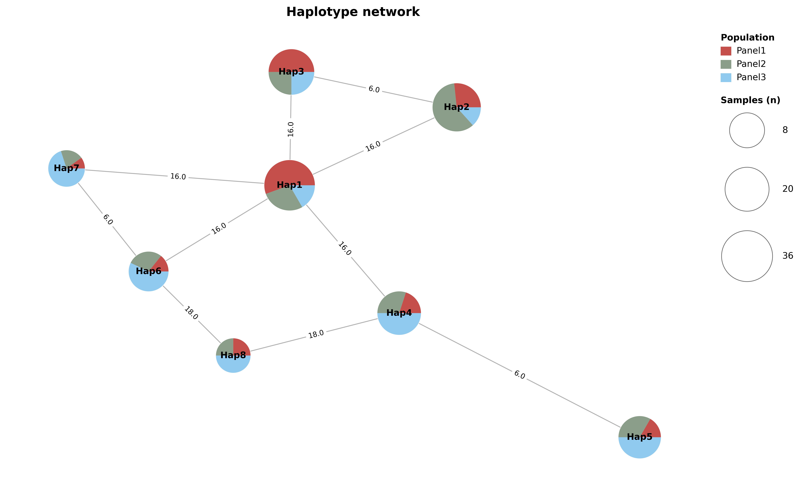

hastat 完整图形示例
每种图展示一张完整示例：160 个合成样本、8 种单倍型、48 个变异、3 个群体。全部图片由当前工具实际绘制。表型和 π/Fst 窗口值为演示数据，不代表真实生物学结论。
输入与读图说明 · 一键复现命令 · 项目文档
从项目根目录运行 bash docs/examples/commands.sh；单独执行下方命令时，先进入 docs/examples。
完整基因单倍型图
4 kb 基因、两侧各 2 kb、五个 CDS、48 个变异、8 种单倍型、样本数、类别颜色、聚类、REF/ALT 比例及三组 π、三对 Fst 及三个群体的 Tajima’s D。Tajima’s D 由工具从同一组合成基因型计算，窗口 1 kb、步长 500 bp；虚线表示零值。外显子之间的箭头表示基因方向。比例条按类别内的不同单倍型计算，不按样本数加权。

PDF · SVG · 600 dpi PNG
hastat plot gene --gff genes.gff3 --genes GeneA --toml gene_tracks.toml --upstream 2000 --downstream 2000 --width 15 --height 13.2 -o ../images/gene_tracks.pdf
完整单倍型网络
8 个节点展示三个群体的组成，群体配色与 π 图一致。Samples (n) 图例展示实际的 8、20、36 个样本，圆圈与节点大小对应；图例放在网络外侧。边权为不同基因型状态的位点数，布局不表示祖先或进化时间。

PDF · SVG · 600 dpi PNG
hastat network -t gene.table.csv -m MSN -o gene.network.csv
hastat plot network --file gene.network.csv --sample_hap gene.group.csv --sample_group populations.csv --show_node_label --show_edge_label --layout spring --seed 31 --node_scale_factor 550 --node_alpha 1 --width 14 --height 9 --title 'Haplotype network' -o ../images/network.pdf
群体样本数
三个群体分别有 52、54、54 个样本；颜色表示 8 种单倍型。

PDF · SVG · 600 dpi PNG
hastat plot bar --sample_hap gene.group.csv --sample_group populations.csv --x_label Population --y_label Samples --width 10 --height 4 -o ../images/bar.pdf
群体组成
与柱状图使用相同样本和颜色；每个群体展示一个饼图及样本总数。

PDF · SVG · 600 dpi PNG
hastat plot pie --sample_hap gene.group.csv --sample_group populations.csv --width 11 --height 4 -o ../images/pie.pdf
表型分布与比较
160 个合成表型值。展示三个比较括号，Tukey 校正使用全部 8 种单倍型构成的 28 个两两比较。

PDF · SVG · 600 dpi PNG
hastat plot box --sample_hap gene.group.csv --sample_phe phenotypes.csv --method TukeyHSD --comparisons Hap1 Hap2 --comparisons Hap1 Hap4 --comparisons Hap1 Hap8 --width 10 --height 5 -o ../images/box.pdf